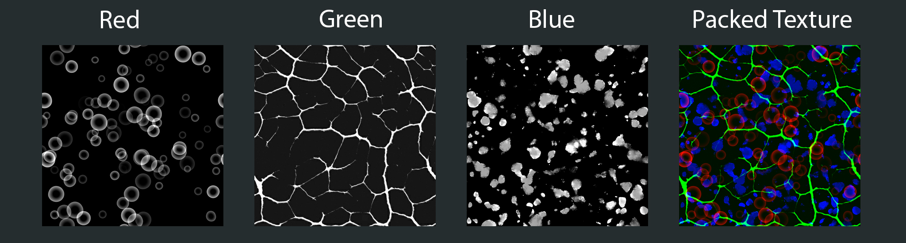
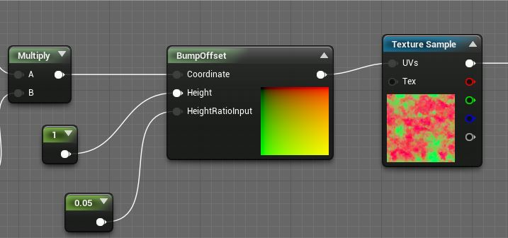
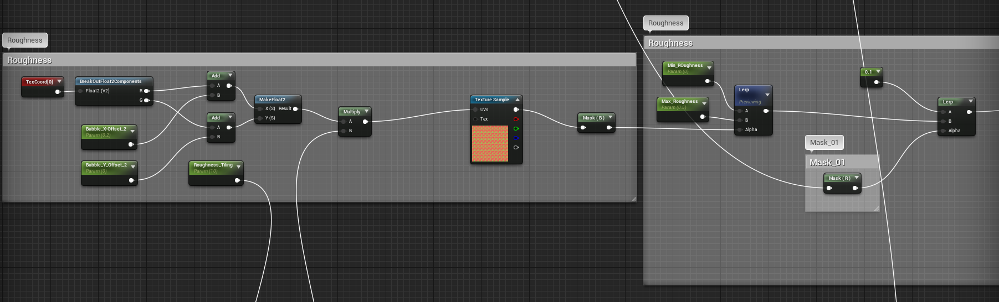
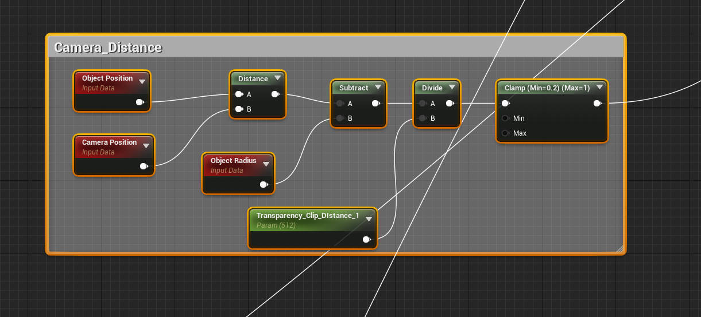
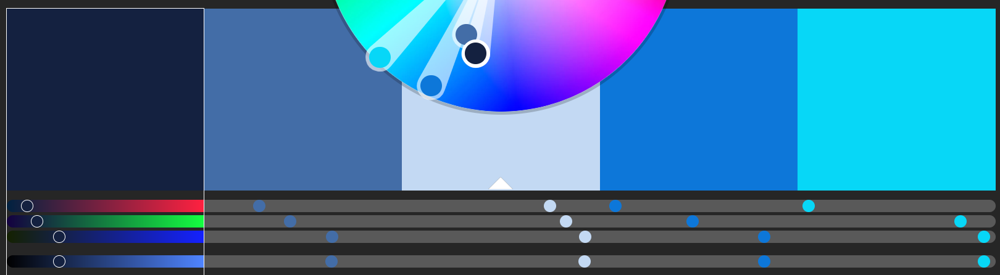
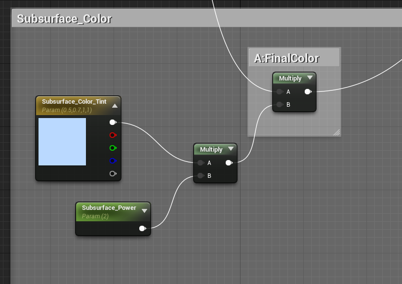

DeepSpaceBanana's Ice Material Breakdown
So i've been meaning to do this for a while, but unfortunately finding time was tricky, but I've managed to sneak in some free time in-between assignments to make this write-up. Now, Full
disclosure, I am no pro, this was a result of me researching/experimenting trying to get a result, lots of googling etc. So it may not be perfect, feel free to leave some feedback or any changes
you may suggest. Anyway lets get started.
Textures
This material makes use of 4-5 textures depending on whether you choose to add a baked normal map for a mesh, 3 of them will contain patterns in each channel and one will be a
general purpose noisy normal map. I used Substance designer to generate these patterns and I thin I also found one or two wit on gogle. The images below show you how
the textures are set up.
BubbleMask.tga

ColorMask-Crack-Roughness.tga
Subsurface-Height-Speckle.tga
NormalMap

BumpOffset Node:
|  |
This node in the UE4 Material Editor, basically helps us make use of parallax mapping, this is waht we use to fake the “depth” in this material.
The basic explanation of how it works is this, you feed it a Coordinate value, a height value and a height ratio value. The Height Value determines
the base or plane from which your heightratio is measured, so if you feed a height value 0 with a height ratio value of -1.0, pixels will appear
as though they are "under" the surface, where as if you have a height value of 0 and a height ratio value of 1.0, pixels will appear to bulge above
the surface (This can look very bad unless you use subtle values). Here's the documentation page for the node:https://docs.unrealengine.com
/latest/INT/Engine/Rendering/Materials/HowTo/BumpOffset/ |
Creating Masks for Surface Coloration
In this step, we are going to mix and match some of the textures we made to create some masks that we will use to control the shader’s coloration and expose some useful variables as parameters so that we can use it to tweak the shader’s appearance with Instances. You can see the network below:
First we create a scalar parameter, “Master Tiling”, we will use this to control the global tiling value for the entire material.

1: Next we create the basic setup that will repeat for all the textures that we use in the shader, we set up a scalar parameter to control the tiling for each TextureSample and multiply it by the Global Tiling parameter , we also setup the bumpOffset Node and the values for it’s inputs to be use.
We do some basic value adjustments to each texture sample with a power node, we do this to create some variation in the masks as we will be re-using the same textures many times in the shader. WIth this network set up we have 3 mask outputs ready to be used (labeled in the image). We will make use of these later.
Bubble,Cracks,Surface Masks
This part of the graph creates surface masks to control areas where the bubbles are visible.

In this section we are going to set up the the masks for the bubbles and surface cracks, see the node Graph below:

In the graph above we repeat the process of setting up tiling parameters for the textures for each texturesample.
1.) This will be the upper most layer of bubbles,we will sue the Blue Channel of the texture as that is where we stored the blobby bubble pattern. We set a height ratio value of -0.2, so the bubbles appear just below the surface.
2.) This section will be bubbles that are deeper inside the surface. FIrst we set up two scalar parameters and add it to the texture coordinate, this will let us add some offsets in the U and V directions to create some variation. Next we repeat the procedure for setting up tiling values,We set a higher tiling value to make the bubbles appear smaller, to help improve the fake depth effect, In the Bump offset node we set a heihgt ratio of -1.0.
We multiply the end result of this network with the an the inverted result of Mask_01 from the previous section. This is done so the bubbles are not visible if they are under the Opaque sections of the ice surface. The gif below shows what the result of this network looks like.

Material Roughness
This section of the graph deals with how we set up the roughness input for the material, we do the same process as before and set up the tiling properties for the texture with the speckle pattern in the Blue channel, we use this as the mask to Lerp between a min an max roughness value. We expose these values as parameters so they can be tweaked. Finally we do a final lerp with the crack pattern mask from Mask_01, this is to give the cracked areas a different roughness than the rest of the surface.

This will serve as the roughness output for the material, if we preview it, it will look something like this:

Opacity/Subsurface Masking
Part 1:
In the following sections we will set up the Opacity output for the material, this part of the graph affect the material in two ways.
1.) It controls teh amount of subsurface scattering that occurs on the surfae of the mesh
2.) With translucency enabled,it controls how opaque/Translucent the material is.
So, this will affect how the Opacity output is used depending on whether we enable translucency or not
(Note: The translucent version of the material is quite expensive, use carefully, ideally any objects that use this shader should mip out to a cheaper version of the material quickly)
It is important to note that Opacity serves two purposes in this material, since our material uses a subsurface shading model, the opacity controls how much subsurface scattering happens on the surface of the object, in the opacity map, white areas = more scattering black areas= less scattering.
With translucency on the other hand, white areas = opaque, black areas = completely transparent. We need to keep this in mind as we build the opacity graph, so that we adress both these needs correctly
This first section just makes a basic mask using the texture we created earlier, but we also add some fresnel, so that the edges of the object do not become completely transparent as this can make the object feel floaty, and not very grounded in the world.
If you preview the node commented as opacity, you’ll see something like this:

Part 2: Camera Distance Mask
Here we set up a camera distance based mask, so that the translucency becomes visible only when we are closer than a specified distance from the object (in thi s case 512 units).
This was a personal choice for me, I didn’t like the way objects looked translucent from afar and wanted it to happend only when the viewer was close to the object.

Here’s a gif showing what this network does, As you can see, the mask gets darker(i.e more transparent) the closer the camera is to the object.

Final Opacity Mask Blending
In this part we bring together all the previous masks we made and blend them together to get the final output that goes into the Opacity Input of the material:
If you preview the output of all these blends, it will look something like this.

BaseColor Pass
The section below shows how we combine all the masks we have created in the previous sections to make the basecolor pass for the material. I used Adobe’ Kuler to pick an Analogous Color palette of light and deep blues, we expose all these colors as Texture Parameters so that it can be tweaked to any artists desires. I’ve commented which Mask goes to which lerp node.

In the end we run everything through a Fuzzy shading Material Function, it works very similar to a fresnel but we are able to control the core darkness and the edge brightness, this function was commonly used when creating moss, cloth(before th release of the new shading model) and grass materials, but it provides an effect that I think works welll with Ice as well.

If you preview the fuzzy shading node you will see something that looks like this. The output from this FuzzyShading Node will go into the BaseColor input of the material. This result will also be used to create the subsurface color in the next section.

Subsurface Color
The subsurface color output is generated by multiplying the Final Color Output with a parameterized color hue, and scaling factor to control how bright the color is. the output of this multiply node will go into the materials subsurface color input.

Normal Map
For the materials normal, the setup is simple, we use the normal texture, with uv coordinates from the Surface Masks section, we also add a static switch parameter to control whether we want to combine it with a baked object normal map. This option is made so that when we apply this material to an object with baked normal maps, we blend the ice normals with the objects baked normal map.
Performance, optimization/Final Thoughts
When you create an instance of this material, you will have the option, of using it as a either a translucent-Subsurface material or as an opaque subsurface material. Using the translucency is quite expensice and ideally you’d want to mip to a cheaper material pretty quickly. The opaque-subsurface version on the other hand is not as beefy and is quite performant.
If you look at the shader complexity comparison between a transparent-subsurface and an Opaque-subsurface version of the material you will there is quite a big difference. For proper estimation of performance of course you want to use the GPU profiler to get accurate information on exactly what is going on in the scene.

The image below shows all the parameters that are exposed to the material instance, these settings can be tweaked to achieve different looks with the same material.
Thank you for reading and I hope you find this useful!Cheers!


{kind=link}
{kind=link}
{kind=link}
{kind=link}
{kind=link}
{kind=link}
{kind=link}
{kind=link}
{kind=link}
{kind=link}
{kind=link}
{kind=link}
{kind=link}
{kind=link}
{kind=link}
{kind=link}